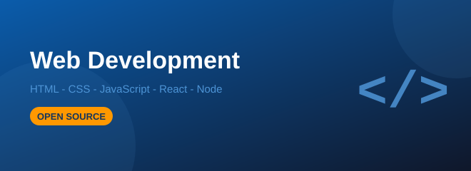
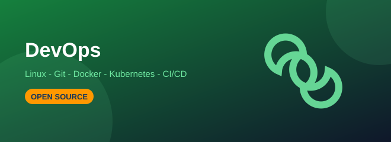
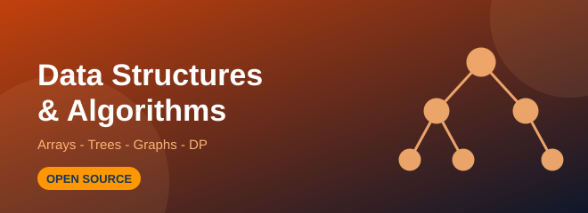

Web Development
Build real websites and full stack apps with HTML, CSS, JavaScript, React and Node.
- Level: Beginner to Intermediate
- Duration: 13 weeks
- Credits: 4
Open Source Computer Science Curriculum — College Track
Six open source tracks for college computer science. Every module links to the original tutorial it is taught from, so you always know where the material came from.

Build real websites and full stack apps with HTML, CSS, JavaScript, React and Node.

Learn Python for data, the maths behind models, and train real ML models with scikit-learn.

Linux, Git, Docker, Kubernetes and CI/CD pipelines that ship code automatically.

Virtualisation, AWS, Azure and GCP core services, serverless and cloud security.

The complete Striver A2Z path: arrays to graphs to dynamic programming, with 450+ problems.

HLD and LLD: scaling, caching, sharding, queues, microservices and design patterns.
| Course | Best Year To Take It | Main Language / Tool | Primary Source | Certificate |
|---|---|---|---|---|
| Web Development | 1st – 2nd year | HTML, CSS, JavaScript | W3Schools | GitHub portfolio |
| AI / Machine Learning | 2nd – 3rd year | Python, scikit-learn | GeeksforGeeks | Kaggle profile |
| DevOps | 3rd year | Linux, Docker, Kubernetes | roadmap.sh | Live deployed app |
| Cloud Computing | 2nd – 3rd year | AWS, Azure, GCP | AWS Free Tier | Cloud project demo |
| Data Structures & Algorithms | All years | C++, Java or Python | takeUforward | Solved sheet repo |
| System Design | Final year | Any backend language | System Design Primer | Design document |